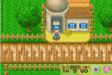

Um pouco ao norte da sua fazenda voce encontrara a loja do ferreiro. Saibara e seu neto, Gray, vao construir para voce novos equipamentos que voce pode usar na sua fazenda. A loja deles e aberta de 10am ate 4pm e e fechado nas quintas-feiras. Fale com Saibara do lado oposto do balcao quando voce quiser comprar algo. Saibara dara um upgrade nas suas ferramentas, vende pra voce equipamentos que voce usa para seus animais e ate mesmo artesanato de presentes que voce pode dar para sua garota. Ele contara a voce o quanto um item custa e quantos dias (Se precisar) levara para faze-lo. Equanto Saibara e Gray estao "Ferreando / Trabalhando", a loja do ferreiro ficara fechada. Quando eles terminarem voce pode voltar para a loja e receber seu item. Para dar um upgrade na s suas ferramentas, voce primeiro vai precisar ter o minerio que voce quer usar. Cada nivel de ferramenta vai ter um minerio diferente. O minerio voce pode encontrar cavando na mina perto do lago da deusa. Depois apenas leve o minerio e sua ferramenta e fale com Saibara. Ele falara a voce o preco para sua ferramenta ser aprimorada e quantos dias levara. Se voce concordar, Saibara vai tirar voce de sua loja e voce tera que retornar depois dos dias necessarios que passaram. |
 |
| Trabalhos de Saibara | ||
|---|---|---|
| Upgrades nas ferramentas | 1000G - 50000G | 1 a 7 dias |
| Escova / Brush | 800G | Nao trabalha |
| Leiteiro / Milker | 2000G | Nao trabalha |
| Tesouras / Scissors | 1800G | Nao trabalha |
| Fazedor de Maionese / Mayo Maker | 20000G + Adamantite | 5 dias |
| Fazedor de queijo / Cheese Maker | 20000G + Adamantite | 5 dias |
| Fazedor de Seda / Yarn Maker | 20000G + Adamantite | 5 dias |
| Colar / Nekclace | 1000G + Orihalcum | 2 dias |
| Brincos / Earrings | 1000G + Orihalcum | 2 dias |
| Bracelete | 1000G + Orihalcum | 2 dias |
| Brochura | 1000G + Orihalcum | 2 dias |
Nota: O queijo, a seda e os fazedores de maionese so vao aparecer na loja depois de voce ter aprimorado seu celeiro e seu galinheiro.